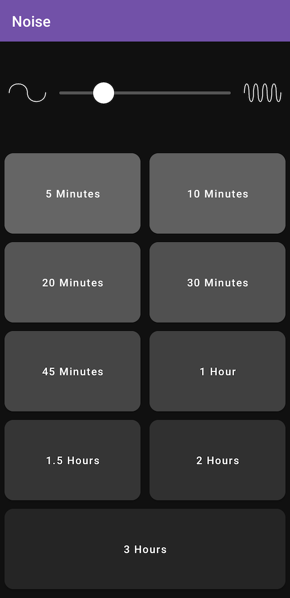

gogledd orllewin
android noise timer
gogledd orllewin
android noise timer
Both our children fall asleep to noise every night, the effectiveness of noise as a sleep aid is debated but for our two it's a cue to settle down and stop talking.
This was a paid app on Google Play but I don't have the patience for the constant admin yak shaving required to keep an app available on there so it's here as a free .apk to side-load instead.
When I made this there were no real noise apps available for Android at all, everything was just a badly looped sample, so I set out to figure out how to generate white/pink/brown noise properly on Android and this was the result.
Download via your Android browser, ignore the theatrical side-loading warnings from the OS: noise_timer_1_0_3.apk
 
Source: github.com/orllewin/noise_timer (code health: 5/10, Android bit-rot is setting in)